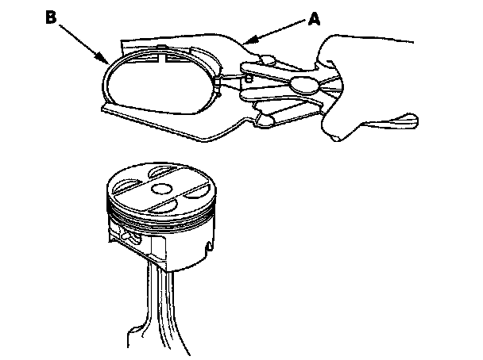
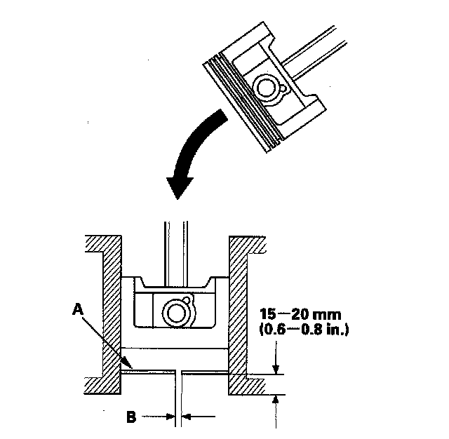
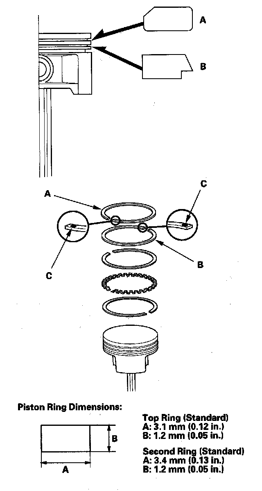
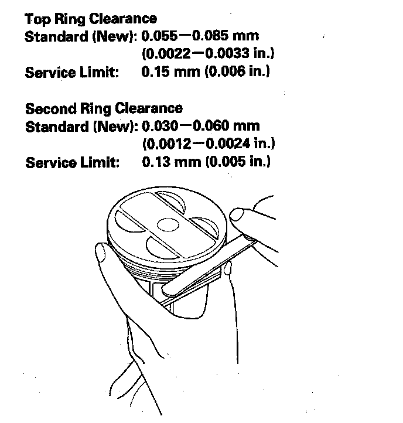
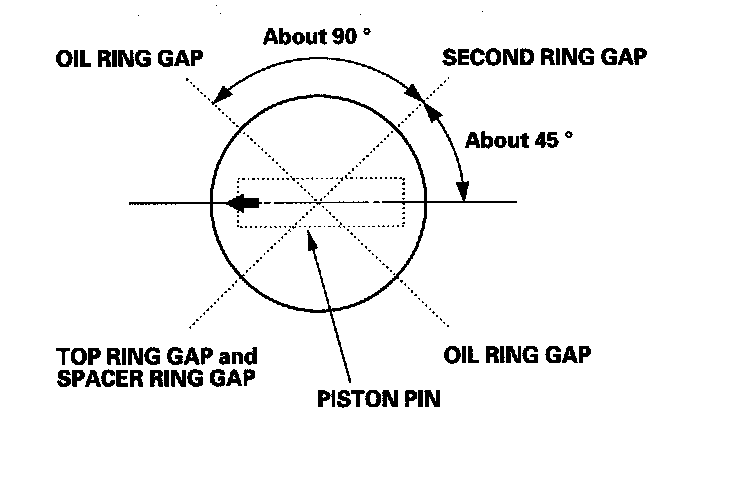

Piston Ring: Service and Repair
Piston Ring Replacement1. Remove the piston from the engine block.
2. Using a ring expander (A), remove the old piston rings (B).

3. Clean all the ring grooves thoroughly with a squared-off broken ring, or a ring groove cleaner with a blade to fit the piston grooves. File down the blade, if necessary. The top ring and second ring grooves are 1.2 mm (0.05 in.) wide, and the oil ring groove is 2.8 mm (0.11 in.) wide. Do not use a wire brush to clean the ring grooves, or cut the ring grooves deeper with the cleaning tool.
NOTE: If the piston is to be separated from the connecting rod, do not install new rings yet.
4. Using a piston, push a new ring (A) into the cylinder bore 15-20 mm (0.6-0.8 in.) from the bottom.

5. Measure the piston ring end-gap (B) with a feeler gauge:
^ If the gap is too small, check to see if you have the proper rings for your engine.
^ If the gap is too large, recheck the cylinder bore diameter against the wear limits.
Piston Ring End-Gap
Top Ring:
Standard (New): 0.30-0.40 mm (0.012-0.016 in.)
Service Limit: 0.60 mm (0.024 in.)
Second Ring:
Standard (New): 0.40-0.55 mm (0.016-0.022 in.)
Service Limit: 0.70 mm (0.028 in.)
Oil Ring:
Standard (New): 0.20-0.70 mm (0.008-0.028 in.)
Service Limit: 0.80 mm (0.031 in.)
6. Install the rings as shown. The top ring (A) has a 1E mark and the second ring (B) has a 2E mark. The manufacturing marks (C) must be facing upward.

7. After installing a new set of rings, measure the ring-to-groove clearance:

8. Rotate the rings in their grooves to make sure they do not bind.
9. Position the ring end gaps as shown:
